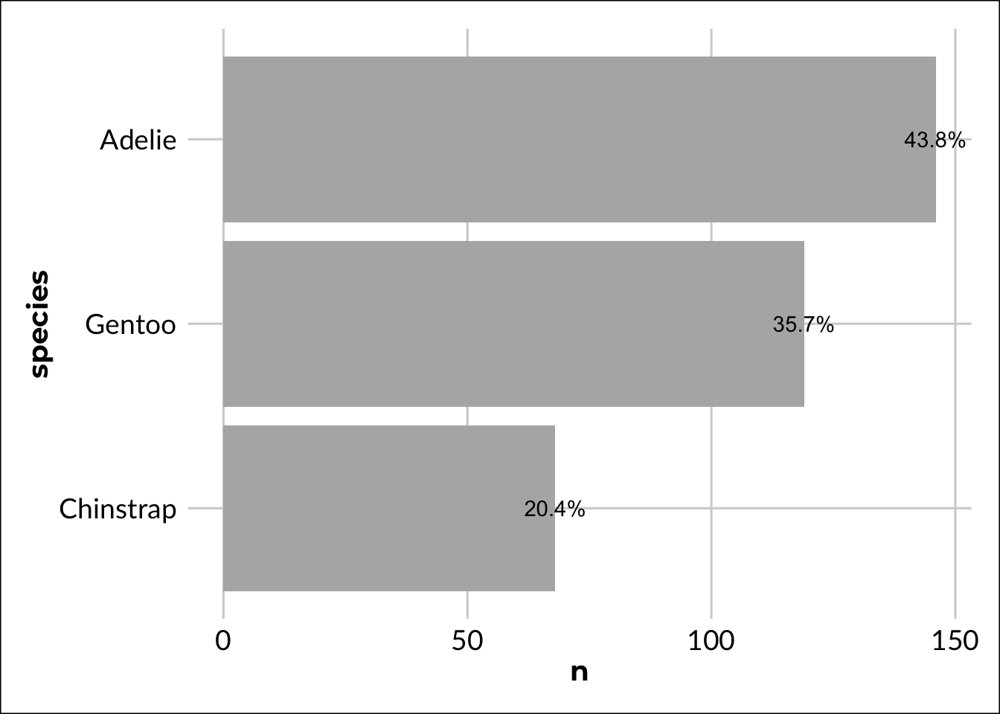
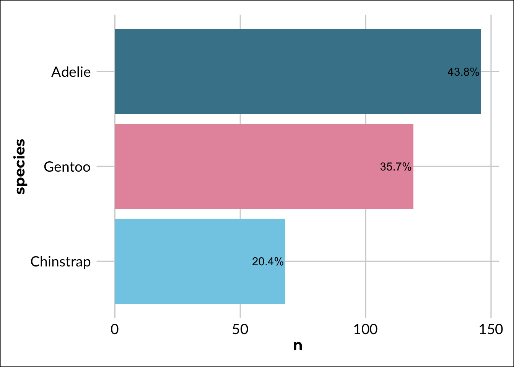
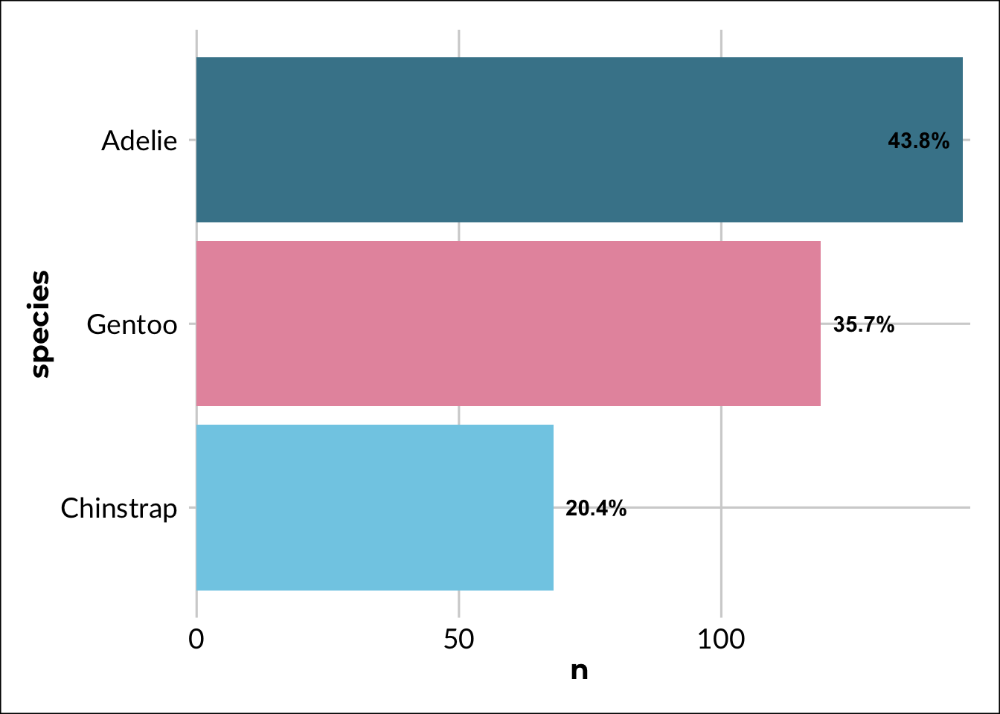

Code
library(palmerpenguins)
library(tidyverse)
library(janitor)
library(gt)
library(becausejustynfun) #personal package with plotting theme
penguins <- palmerpenguins::penguinsI have been planning on writing a post for a few weeks, but I keep changing my mind on what I want to write about. I have been going through my Github profile lately and tidying it up. It has made me realise how much code I had stashed away that I did not need, so I am trying to get into the habit of only keeping code that is available on Github to keep organised and accountable.
I have also been doing a lot of NFL data viz, which I found a lot harder than I thought it would be. I’ll share them at a later date, but I thought I would do a quick post at 11pm at some tricks I learnt with using text labels. I thought I would use the penguins dataset from palmerpenguins since it does not appear to be as common as others such as mtcars.
Even though I am using the cleaned version, I find it good practice to use glimpse() just to be safe.
Rows: 344
Columns: 8
$ species <fct> Adelie, Adelie, Adelie, Adelie, Adelie, Adelie, Adel…
$ island <fct> Torgersen, Torgersen, Torgersen, Torgersen, Torgerse…
$ bill_length_mm <dbl> 39.1, 39.5, 40.3, NA, 36.7, 39.3, 38.9, 39.2, 34.1, …
$ bill_depth_mm <dbl> 18.7, 17.4, 18.0, NA, 19.3, 20.6, 17.8, 19.6, 18.1, …
$ flipper_length_mm <int> 181, 186, 195, NA, 193, 190, 181, 195, 193, 190, 186…
$ body_mass_g <int> 3750, 3800, 3250, NA, 3450, 3650, 3625, 4675, 3475, …
$ sex <fct> male, female, female, NA, female, male, female, male…
$ year <int> 2007, 2007, 2007, 2007, 2007, 2007, 2007, 2007, 2007…Next, I am checking for missing values.
species island bill_length_mm bill_depth_mm
0 0 2 2
flipper_length_mm body_mass_g sex year
2 2 11 0 To see how I will deal with them I like to see the unique values across each column.
species island bill_length_mm bill_depth_mm
3 3 165 81
flipper_length_mm body_mass_g sex year
56 95 3 3 I’ll have a glance at the missing values to see if they are important.
# A tibble: 11 × 8
species island bill_length_mm bill_depth_mm flipper_length_mm body_mass_g
<fct> <fct> <dbl> <dbl> <int> <int>
1 Adelie Torgersen NA NA NA NA
2 Adelie Torgersen 34.1 18.1 193 3475
3 Adelie Torgersen 42 20.2 190 4250
4 Adelie Torgersen 37.8 17.1 186 3300
5 Adelie Torgersen 37.8 17.3 180 3700
6 Adelie Dream 37.5 18.9 179 2975
7 Gentoo Biscoe 44.5 14.3 216 4100
8 Gentoo Biscoe 46.2 14.4 214 4650
9 Gentoo Biscoe 47.3 13.8 216 4725
10 Gentoo Biscoe 44.5 15.7 217 4875
11 Gentoo Biscoe NA NA NA NA
# … with 2 more variables: sex <fct>, year <int>Given the NA values were low, I will just drop them.
# A tibble: 0 × 0I am going to create a seperate df with the count values. You can easily just use add_count(), or just rely on ggplot2 to do that for you, but later on we are going to make more adjustments to the df that will make it easier if there is a mistake.

## prepare non-aggregated data set with lumped and ordered factors
penguins_fct <- penguins %>%
dplyr::mutate(
total = dplyr::n(),
species = stringr::str_to_title(species),
species = forcats::fct_rev(forcats::fct_infreq(species))
)
penguins_sum <- penguins_sum %>%
mutate(
colour = case_when(
row_number() == 1 ~ "#468499",
row_number() == 2 ~ "#E697AC",
row_number() == 3 ~ "#81CDE6",
## all others should be gray
TRUE ~ "gray70"
)
)This is one approach were we conditionally colour each variable of choice.

We also have a lot of control over the font used. There can be challenges when installing a font onto your system for the first time, but I might go through that another time since I struggled with it for quite a while. Maybe I am just a silly billy.
penguins_sum %>%
ggplot(aes(
x = n,
y = species,
fill = colour)) +
geom_col() +
geom_text(
aes(label = perc),
hjust = 1, nudge_x = -.5,
size = 4, fontface = "bold", family = "Fira Sans"
) +
## reduce spacing between labels and bars
scale_x_continuous(expand = c(.01, .01)) +
scale_fill_identity(guide = "none") +
white_theme() Sometimes the colour of the font does not match well with the plot. This can be challenging when you have more than a few colours, so you might not want to manually adjust every single one. One option is to add white to the label with fill = "white".
penguins_sum %>%
ggplot(aes(
x = n,
y = species,
fill = colour)) +
geom_col() +
geom_label(
aes(label = perc),
hjust = 0.95, nudge_x = -.5,
size = 4, fontface = "bold",
## turn into white box without outline
fill = "white", label.size = 0
) +
scale_x_continuous(expand = c(.01, .01)) +
scale_fill_identity(guide = "none") +
white_theme() +
theme(
axis.text.y = element_text(size = 14, hjust = 1, family = "Fira Sans"),
plot.margin = margin(rep(15, 4))
)Likewise, it is possible to adjust the position of the text labels conditionally. I think ggplot2 biggest challenge is learning what you can do.
penguins_sum %>%
mutate(
## set justification based on data
## so that only the first label is placed inside
place = if_else(row_number() == 1, 1, 0),
## add some spacing to labels since we cant use nudge_x anymore
perc = paste(" ", perc, " ")
) %>%
ggplot(aes(
x = n,
y = species,
fill = colour)) +
geom_col() +
geom_text(
aes(label = perc, hjust = place),
fontface = "bold"
) +
scale_x_continuous(expand = c(.01, .01)) +
scale_fill_identity(guide = "none") +
white_theme() +
theme(
plot.margin = margin(rep(15, 4))
)
You can use different positions of text labels to highlight things of interest, or sometimes adjusting it makes it easier to work around other features of the plot such as the background or legend.
That is all for today. I’ll try to post next week about more data viz.
R version 4.1.2 (2021-11-01)
Platform: x86_64-apple-darwin17.0 (64-bit)
Running under: macOS Big Sur 10.16
Matrix products: default
BLAS: /Library/Frameworks/R.framework/Versions/4.1/Resources/lib/libRblas.0.dylib
LAPACK: /Library/Frameworks/R.framework/Versions/4.1/Resources/lib/libRlapack.dylib
locale:
[1] en_GB.UTF-8/en_GB.UTF-8/en_GB.UTF-8/C/en_GB.UTF-8/en_GB.UTF-8
attached base packages:
[1] stats graphics grDevices datasets utils methods base
other attached packages:
[1] becausejustynfun_0.0.0.9000 gt_0.3.1
[3] janitor_2.1.0 forcats_0.5.1
[5] stringr_1.4.0 dplyr_1.0.9
[7] purrr_0.3.4 readr_2.1.2
[9] tidyr_1.2.0 tibble_3.1.7
[11] ggplot2_3.3.6 tidyverse_1.3.1
[13] palmerpenguins_0.1.0
loaded via a namespace (and not attached):
[1] Rcpp_1.0.8.3 lubridate_1.8.0 assertthat_0.2.1
[4] digest_0.6.29 utf8_1.2.2 R6_2.5.1
[7] cellranger_1.1.0 backports_1.4.1 reprex_2.0.1
[10] evaluate_0.15 httr_1.4.3 pillar_1.7.0
[13] rlang_1.0.2 readxl_1.3.1 rstudioapi_0.13.0-9000
[16] rmarkdown_2.14 labeling_0.4.2 htmlwidgets_1.5.4
[19] munsell_0.5.0 broom_0.8.0 compiler_4.1.2
[22] modelr_0.1.8 xfun_0.31.2 pkgconfig_2.0.3
[25] htmltools_0.5.2 tidyselect_1.1.2 fansi_1.0.3
[28] crayon_1.5.1 tzdb_0.2.0 dbplyr_2.1.1
[31] withr_2.5.0 grid_4.1.2 jsonlite_1.8.0
[34] gtable_0.3.0 lifecycle_1.0.1 DBI_1.1.2
[37] magrittr_2.0.3 scales_1.2.0 cli_3.3.0
[40] stringi_1.7.6 farver_2.1.0 renv_0.15.5
[43] fs_1.5.2 ggthemes_4.2.4 snakecase_0.11.0
[46] xml2_1.3.3 ellipsis_0.3.2 generics_0.1.2
[49] vctrs_0.4.1 tools_4.1.2 glue_1.6.2
[52] hms_1.1.1 fastmap_1.1.0 yaml_2.3.5
[55] colorspace_2.0-3 rvest_1.0.2 knitr_1.39
[58] haven_2.4.3 ---
title: "Bar Plots"
execute:
freeze: true
eval: true
format:
html:
highlight: true
code-fold: show
code-tools: true
highlight-style: github
---
I have been planning on writing a post for a few weeks, but I keep changing my mind on what I want to write about. I have been going through my Github profile lately and tidying it up. It has made me realise how much code I had stashed away that I did not need, so I am trying to get into the habit of only keeping code that is available on Github to keep organised and accountable.
I have also been doing a lot of NFL data viz, which I found a lot harder than I thought it would be. I'll share them at a later date, but I thought I would do a quick post at 11pm at some tricks I learnt with using text labels. I thought I would use the penguins dataset from `palmerpenguins` since it does not appear to be as common as others such as `mtcars`.
```{r}
#| warning: false
library(palmerpenguins)
library(tidyverse)
library(janitor)
library(gt)
#personal package with plotting theme
library(becausejustynfun)
penguins <- palmerpenguins::penguins
```
Even though I am using the cleaned version, I find it good practice to use `glimpse()` just to be safe.
```{r}
penguins %>% glimpse()
```
Next, I am checking for missing values.
```{r}
#penguins %>%
# summarise(across(everything(), ~sum(is.na(.))))
penguins %>% map_dbl(~sum(is.na(.)))
```
To see how I will deal with them I like to see the unique values across each column.
```{r}
#penguins %>%
# summarise(across(everything(), n_distinct))
penguins %>%
map_dbl(~n_distinct(.))
```
I'll have a glance at the missing values to see if they are important.
```{r}
penguins %>%
filter(if_any(everything(), is.na))
```
Given the `NA` values were low, I will just drop them.
```{r}
penguins <- penguins %>%
na.exclude()
#to check
map_dfc(penguins, sum(is.na(penguins)))
#map_df(penguins, .f = sum(is.na(penguins)))
```
I am going to create a seperate df with the count values. You can easily just use `add_count()`, or just rely on `ggplot2` to do that for you, but later on we are going to make more adjustments to the df that will make it easier if there is a mistake.
```{r}
#df of counts
penguins_sum <- penguins %>%
count(species, sort = TRUE) %>%
mutate(
species = fct_rev(fct_inorder(species)),
perc = paste0(sprintf("%4.1f", n / sum(n) * 100), "%") #percentage label
)
#scales alternative
#mutate(perc = scales::percent(n / sum(n), accuracy = .1, trim = FALSE))
```
```{r}
penguins_sum %>%
ggplot(aes(x = n, y = species)) +
geom_col(fill = "gray70") +
## add percentage labels
geom_text(aes(label = perc)) +
white_theme()
```
```{r}
## prepare non-aggregated data set with lumped and ordered factors
penguins_fct <- penguins %>%
dplyr::mutate(
total = dplyr::n(),
species = stringr::str_to_title(species),
species = forcats::fct_rev(forcats::fct_infreq(species))
)
penguins_sum <- penguins_sum %>%
mutate(
colour = case_when(
row_number() == 1 ~ "#468499",
row_number() == 2 ~ "#E697AC",
row_number() == 3 ~ "#81CDE6",
## all others should be gray
TRUE ~ "gray70"
)
)
```
This is one approach were we conditionally colour each variable of choice.
```{r}
penguins_sum %>%
ggplot(aes(
x = n,
y = species,
fill = colour)) +
geom_col() +
geom_text(
aes(label = perc),
hjust = 1, nudge_x = -.5
) +
## add custom colors
scale_fill_identity(guide = "none") +
white_theme()
```
We also have a lot of control over the font used. There can be challenges when installing a font onto your system for the first time, but I might go through that another time since I struggled with it for quite a while. Maybe I am just a silly billy.
```{r}
penguins_sum %>%
ggplot(aes(
x = n,
y = species,
fill = colour)) +
geom_col() +
geom_text(
aes(label = perc),
hjust = 1, nudge_x = -.5,
size = 4, fontface = "bold", family = "Fira Sans"
) +
## reduce spacing between labels and bars
scale_x_continuous(expand = c(.01, .01)) +
scale_fill_identity(guide = "none") +
white_theme()
```
Sometimes the colour of the font does not match well with the plot. This can be challenging when you have more than a few colours, so you might not want to manually adjust every single one. One option is to add white to the label with `fill = "white"`.
```{r}
penguins_sum %>%
ggplot(aes(
x = n,
y = species,
fill = colour)) +
geom_col() +
geom_label(
aes(label = perc),
hjust = 0.95, nudge_x = -.5,
size = 4, fontface = "bold",
## turn into white box without outline
fill = "white", label.size = 0
) +
scale_x_continuous(expand = c(.01, .01)) +
scale_fill_identity(guide = "none") +
white_theme() +
theme(
axis.text.y = element_text(size = 14, hjust = 1, family = "Fira Sans"),
plot.margin = margin(rep(15, 4))
)
```
Likewise, it is possible to adjust the position of the text labels conditionally. I think `ggplot2` biggest challenge is learning what you can do.
```{r}
penguins_sum %>%
mutate(
## set justification based on data
## so that only the first label is placed inside
place = if_else(row_number() == 1, 1, 0),
## add some spacing to labels since we cant use nudge_x anymore
perc = paste(" ", perc, " ")
) %>%
ggplot(aes(
x = n,
y = species,
fill = colour)) +
geom_col() +
geom_text(
aes(label = perc, hjust = place),
fontface = "bold"
) +
scale_x_continuous(expand = c(.01, .01)) +
scale_fill_identity(guide = "none") +
white_theme() +
theme(
plot.margin = margin(rep(15, 4))
)
```
You can use different positions of text labels to highlight things of interest, or sometimes adjusting it makes it easier to work around other features of the plot such as the background or legend.
That is all for today. I'll try to post next week about more data viz.
:::{.callout-caution collapse="true"}
## Session Info
```{r}
sessionInfo()
```
:::